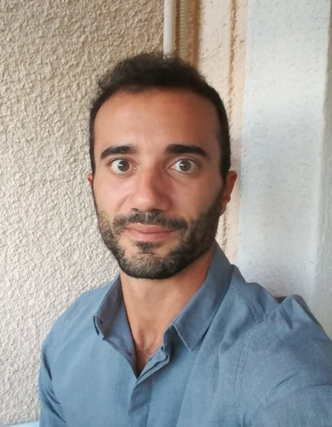

Tiziano Bacci
Senior Research Scientist in Operations Research working at IASI-CNR in Rome. His work combines mathematical modeling and algorithm design, with a particular focus on exact methods, branch-and-cut approaches, dynamic programming-based formulations, and mixed-integer nonlinear optimization.
His research has addressed problems in unit commitment, block relocation, blood donation planning, logistics systems, and broader combinatorial optimization settings arising in industry and public services.
Contacts
Appointments
Senior Research Scientist in Operations Research
Institute for Systems Analysis and Computer Science “Antonio Ruberti”, National Research Council of Italy (IASI-CNR), Rome.
Research Scientist in Operations Research
IASI-CNR, Rome.
Research Fellow in Operations Research
IASI-CNR, Rome.
Education
PhD in Computer Science, Operations Research
University of Rome Tor Vergata.
Master’s Degree in Management Engineering
University of Rome Tor Vergata.
Bachelor’s Degree in Management Engineering
University of Rome Tor Vergata.
Selected Publications
Research Projects
- ACHILLES – ecosustAinable effiCient tecH-drIven Last miLE logistics · Local Unit Coordinator for CNR-IASI · PRIN 2022 2022–2026
- RAISE – Robotics and AI for Socio-economic Empowerment · Local Unit Coordinator for CNR-IASI · PNRR project 2023–2026
- UISH – Urban Intelligence Science Hub for City Network · Participant · 2021–Present
- CTEMT – Casa delle Tecnologie Emergenti Matera · Participant · 2019–2026
- ARPA – Autonomous and flexible Manufacturing and Augmented Reality techniques for Processes Automation · Participant · PON I & C 2019–2025
- REMIND – Reverse Manufacturing INnovation Decision System · Participant · POR- FESR Regione Lazio 2020–2023
- SPORT – Nonlinear and Combinatorial Aspects of Complex Networks · Participant · PRIN 2017–2020
- SPORT – Smart PORt Terminals · Participant · PRIN 2017–2020
- CONTRAST – Container Transshipment Station · Participant · POR- FESR Regione Lazio 2013–2015
Teaching & Academic Service
- Adjunct Professor, Integer Programming and Combinatorial Optimization, Sapienza University of Rome · 2024–2025
- Adjunct Professor, Metodi e modelli di ottimizzazione discreta 1, University of Rome Tor Vergata · 2018–2021
- Organizer Committee Member, 18th EU/ME Workshop on Metaheuristics for a Better World · Rome · 2017